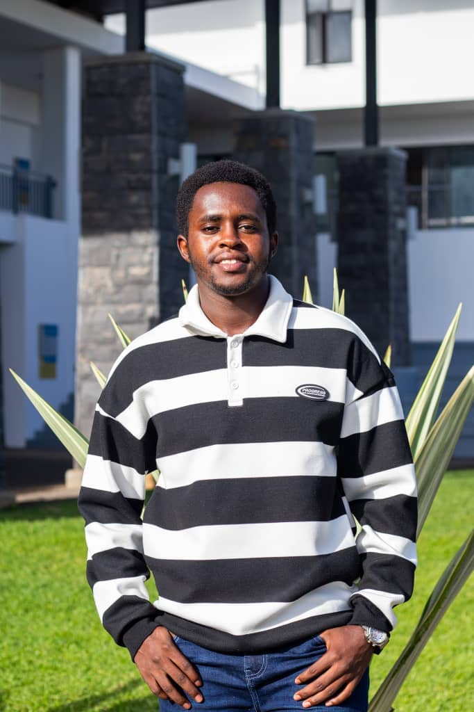

Hi, I'm Sostene
I'm a university student at African Leadership College of Higher Education [ALCHE] in Mauritius who enjoys building things with code. I'm interested in software engineering, systems programming, Linux and computer networking. I created Odlar Diyarı to practise clean HTML, CSS and JavaScript and to design a travel agency website that makes visitors want to discover Azerbaijan.
When I'm not coding, I like exploring new tools, setting up my own Linux environment and learning how systems work under the hood.
Technical skills
- HTML5
- CSS3
- JavaScript
- Python
- Flask
- SQLite
- Linux
- Computer networking
- Git
- Blender (3D)
Soft skills
- Problem solving
- Teamwork
- Communication
- Time management
- Curiosity
- Adaptability
Contact details
- Email: your.name@example.com
- GitHub: github.com/your-username
- LinkedIn: linkedin.com/in/your-username
- Based in: Mauritius